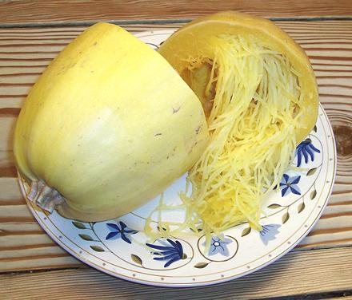

Spaghetti Squash
[Vegetable Spaghetti; Cucurbita peppo]
This squash is quite a curiosity, but is also quite useful for making
interesting side dishes. Despite the name, it is not a substitute for
spaghetti, as it is entirely vegetable in taste and texture.
These squash are usually around 8 inches long by 5 inches diameter,
weighting about 3 pounds, but they can be found up to 5 pounds and even
over that. The photo specimen was 8 inches long and weighed 4 pounds.
More on Squash.
Buying:
This squash is quite common in markets here
in Southern California, and since the ship well, probably most places
in North America. Select squash that is heavy for its size, but entirely
yellow or ivory. If there is any trace of green, it is not ripe enough.
Storing:
This squash will keep in a cool dry place for
a week or so. Seeds inside may sprout, but the squash is still fine if
firm. Once cut, they should be refrigerated and used within a few days,
or they will mold.
Cooking:
This squash is usually cut in half, seeded, and
then roasted in a 400° preheated oven for 45 minutes, cut side
down. Don't overcook, the strands should still have a bit of crunch.
There is no reason this squash couldn't be steamed, but I don't have
timing on that.
sq_spagz 191117 - www.clovegarden.com
©Andrew Grygus - agryg@aaxnet.com - Linking to and
non-commercial use of this page is permitted.